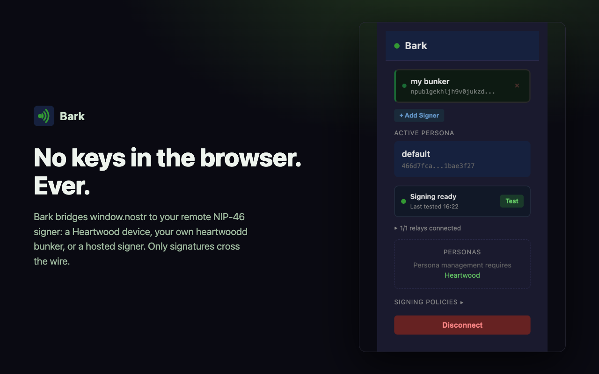
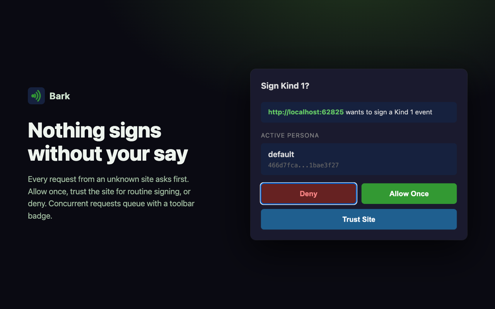
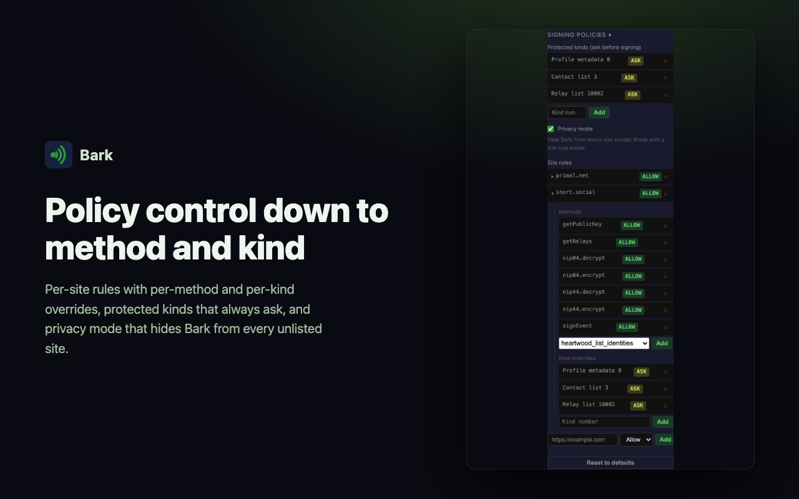
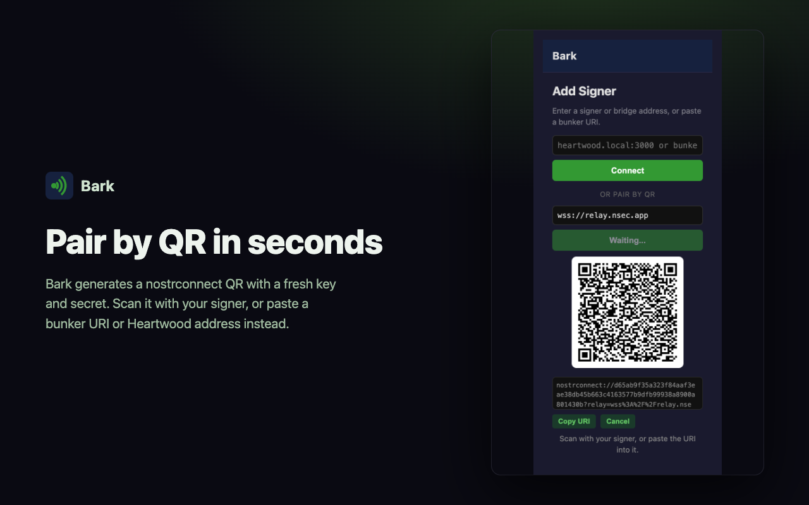
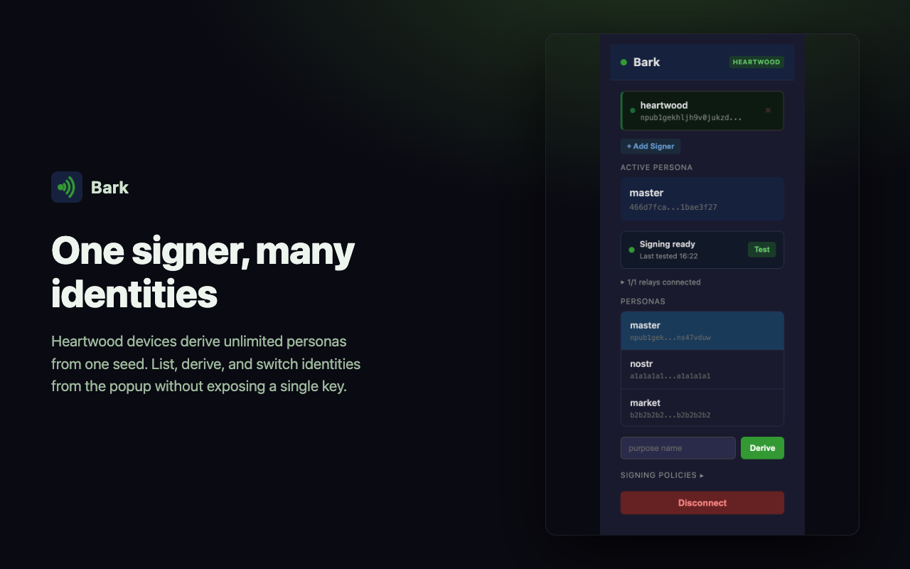

Bark is a small extension that hands signing to a device you control. Web apps get their signatures. They never get your keys.
Free. Open source. No analytics, no accounts, no wallet, no nonsense.
Your private key is your identity. Lose it and you start again from nothing; leak it and someone else is you, forever. Yet the most common way people use Nostr is to paste that key into a browser extension and hope.
Browsers are where phishing pages, malicious scripts, and rogue extension updates live. Keeping your most unrecoverable secret there is a bet that nothing in your browser will ever go wrong. Bark refuses the bet. It holds no key at all: signing happens on a signer you control, and the browser only ever carries requests out and signatures back, encrypted end to end with NIP-46.
If your laptop were stolen tomorrow, the thief would find a connection string that can ask your signer for permission. Yours to revoke. That is the whole point.
Same web apps, same signatures. The difference is what a thief gets.
Bark does one job and takes it seriously: let Nostr web apps request signatures without ever seeing your keys. Everything else is there to make that safe and unannoying.
The first time a site wants your identity or a signature, you decide: allow once, trust the site, or deny. If the browser hides the approval window, Bark puts a clear notice on the page with one button to bring it forward. Your profile, contact list, and relay list stay protected even on trusted sites. Multiple requests queue politely instead of failing.
Allow, ask, or deny per site, per method, per event kind. Let a client sign notes but never touch your DMs. Sensible defaults if you never open the settings; full control if you do.
Privacy mode hides Bark from every site you haven't whitelisted. No provider object, no error messages, nothing to fingerprint. Sites you've never heard of can't even tell you use Nostr.
Heartwood, heartwoodd, nsecBunker, Amber, nsec.app, or anything else that speaks NIP-46. Paste a bunker URI, scan a QR, or pair a local device. No lock-in, ever.
No blanket site access: on Chrome, Bark runs only on well-known Nostr apps out of the box, and anywhere else needs your one-click say-so. No browsing history, no remote code, no analytics, and no reading page content. Bark adds only the NIP-07 bridge and a temporary notice when your approval is needed.
The interface ships in 53 locales, from Arabic to Vietnamese. Fast, too: the connection stays warm while you browse, so signing doesn't make you wait.
From the store, or grab the zip below and load it unpacked. It's tiny.
Paste a bunker:// URI, or hit "Pair by QR" and scan it with your signer. Bark generates a fresh key and secret for every attempt.
Open any Nostr web app and log in with the extension. Bark asks before a new site can do anything; after that it stays out of your way.
The popup, visible approval prompts, and the policy editor. Bark tells you on the page when a request is waiting, even if your browser hid the approval window.





Bark is the outer layer of something bigger. ForgeSworn builds the whole trunk: a hardware signer at the core, and a layer for every place you use Nostr. Each part is open source, each works on its own, and together they mean your key can live on a chip on your desk while you post from anywhere.
An open hardware signer built on ESP32. Keys are generated on the device and never leave it; a physical button approves what policies don't. This is what Bark was built for.
Meet the hardware →No hardware yet? The same daemon runs standalone on a Pi or server with keys encrypted at rest. Your own bunker, no third party, upgrade to hardware whenever.
Run your own bunker →The same idea on Android: registers as a NIP-55 signer for apps like Amethyst and Primal, holds no keys, and proxies everything to your Heartwood.
Sign from your phone →The management UI: provision a device, create identities, set slot policies, approve requests, take encrypted backups. Shape your signer.
Manage your signer →The same restraint for your AI: an MCP server and CLI for trust-aware Nostr. Holds no keys; happiest signing through your Heartwood bunker.
Give your AI a saddle →Version 1.3.4. Chrome and Firefox store listings are in review; direct downloads work today.
Until the Chrome Web Store listing is live: download the zip, extract it, enable Developer mode at chrome://extensions, and Load unpacked.
Until the Firefox Add-ons listing is live: download the zip and load it temporarily via about:debugging, or wait for the signed listing.
The Safari build converts with Apple's Safari Web Extension tooling. An App Store listing is planned.
Download for SafariOn your phone the same job is done by Cambium: it registers as a NIP-55 signer for Amethyst, Primal and friends, holds no keys, and proxies to your Heartwood.
Download Cambium APK# or build it yourself and check our work
git clone https://github.com/forgesworn/bark.git
cd bark && npm install && npm run build:allAll releases and checksums: Bark · Cambium
No token, no tier, no tracking. Bark is free because signing infrastructure should be. If it's worth something to you, send some value back: it funds store fees, prototype boards, and the time to keep building.